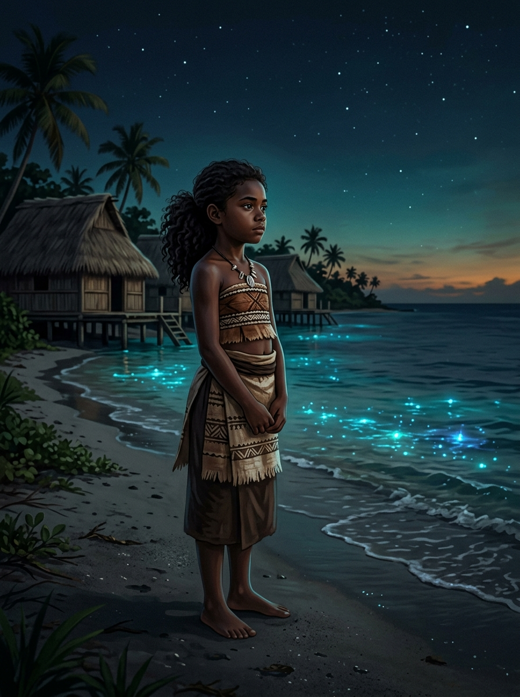

"The ocean rises a few millimeters every year."
"Until those millimeters become a lifetime."
In 2024, Litia was born in a coastal village in Fiji. She inherits a shoreline in flux, though she is still too young to understand thermal expansion, melting ice sheets, or rising greenhouse gas emissions.
To her, the ocean is a constant, reassuring presence. It sustains her family, shapes communal stories, and lulls her to sleep.
Yet, the sea around her home has already risen significantly since her parents took their first steps on these shores. By the time she reaches adulthood, this change will have accelerated.

In 1993, high-precision satellite altimetry began recording global sea levels, establishing a baseline of zero deviation.
For generations, the shorelines of Fiji, Samoa, and Tuvalu had remained relatively stable, with seasonal tides gently sculpting the shores.
But beneath the surface, a thermodynamic shift was already underway. The oceans were absorbing over 90% of the excess heat trapped by greenhouse gas emissions, triggering a steady, irreversible thermal expansion.
Hover over the chart to inspect the exact millimeter rise recorded for any year across multiple Pacific island nations.
The ocean does not rise evenly like water in a bathtub. Due to Earth's rotation, localized gravitational pull, prevailing currents, and wind patterns, water accumulates unevenly.
Some Pacific archipelagos experience localized sea-level rise at double or triple the global average rate.
Because sea levels rise unevenly, climate adaptation cannot be a one-size-fits-all solution. Funding, coastal defenses, and migration planning must be tailored to each archipelago.
Drag the slider to compare the Fijian shoreline at the start of the satellite record (1993) with the conditions Litia faces today (2024).
Hover over island nodes on the map to inspect individual sea level records.
"The ocean rises a few millimeters every year."
For a child born today, that sounds small.
Until those millimeters become a lifetime.
By 2050, when Litia turns 26, local sea levels in Fiji are projected to rise by more than 200 mm. Her coastal community faces a stark, painful decision.
Select a path above to explore the consequences of Litia's future...
For indigenous Pacific Islanders, separating from their land is a form of cultural erasure. Many coastal communities choose to stay and defend their homes. They do not see themselves as passive victims of climate change, but as active guardians on the front lines of global resilience.
"We are not drowning, we are fighting. But our resilience must not be used as an excuse for global inaction."